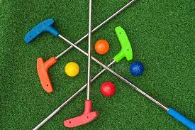
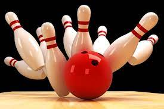

Video Games: I have played videogames since I was very young. I mostly play Mario, Sonic, or Minecraft games. I enjoy both the competetive ones against other players such as Mario Party and cooperative ones such as Minecraft where you survive and either beat the game or build your own structures.
Mini-Golf: The sport is very calming and enjoyable with family or a group of friends. Although since it is expensive to go to a course, I only go every once in a while.
Bowling: I enjoy knocking down pins every once in a while to let off steam or even just to socialize with someone else. I perfer playing a game with people so I don't bowl if I know that I'm going to be alone
We used to have pet fish in our family. However, because of our recent move to Ixonia, we no longer have our fish tank set up. To those wondering why don't we get a dog or a cat, we cant for a couple reasons: (1) My family is very busy and its unlikely that we would be able to take care of it properly; (2) One person in my family has asthma, so we can't have a pet with fur.
Right now, I don't know what area of computer science that I want to go into. I'll figure it out maybe by the end of this semester. However, I am thinking I want to get a master's degree in either AI, Cyber Security, or Web development currently. However, I am undecided at the current moment about it.